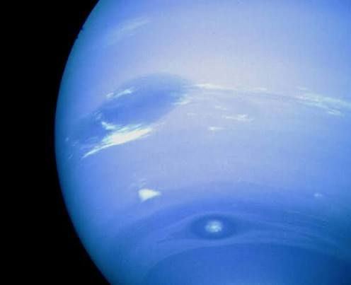
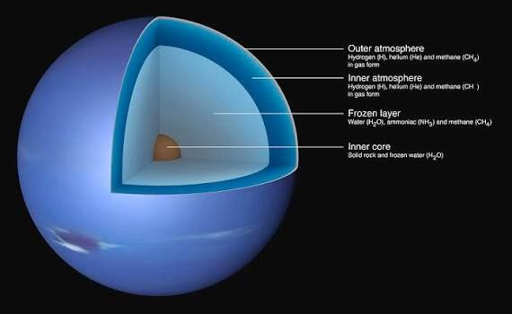

Neptune
Farthest planet; cold ice giant.

အရွယ်အစား
49,244 km
တစ်နေ့ကြာချိန်
16h 6m
အပူချိန်
≈ -201 °C
လများ
14 Moons
Neptune သည် Solar System ထဲတွင် Sun မှ အဋ္ဌမမြောက်အကွာအဝေးရှိသော ဂြိုလ်ဖြစ်သည်။ Neptune သည် ice giant ဟုခေါ်သော ဂြိုလ်အမျိုးအစားဖြစ်ပြီး အဓိကအားဖြင့် ရေခဲနှင့် ဓာတ်ငွေ့များဖြင့် ဖွဲ့စည်းထားသည်။ Neptune ၏ အပြာရောင်သည် ၎င်း၏ လေထုတွင် methane ဓာတ်ငွေ့ ရှိမှုကြောင့် ဖြစ်ပြီး Solar System ထဲတွင် အနီးဆုံးအေးသော ဂြိုလ်တစ်ခုအဖြစ် သိရှိထားသည်။ Neptune ၏ အပူချိန် ပျမ်းမျှ -220°C ခန့်ရှိသည်။ Neptune ၏ လှည့်ပတ်မှု (rotation) သည် ၁၆ နာရီခန့်ဖြစ်ပြီး Sun ကို တစ်ပတ်လည် လှည့်ပတ်ရန် ၁၆၅ နှစ်ခန့်ကြာသည်။ Neptune တွင် ဂြိုလ်တုများ ၁၄ လုံးရှိပြီး အကြီးဆုံးဂြိုလ်တုမှာ Triton ဖြစ်သည်။ Triton သည် ဂြိုလ်၏ gravitational force ၏ အကျိုးအာနိသင်ကြောင့် နောက်ပြန်လှည့်ပတ်နေသော အထူးဂြိုလ်တုတစ်ခုဖြစ်သည်။

Surface Details
Internal Structureထူးခြားချက်များ
Ice giant, အလွန်အေးသော ဂြိုလ် အပြာရောင်, methane ကြောင့် အပြာရောင်တောက်ပခြင်း ဂြိုလ်တု ၁၄ လုံးရှိ (Triton အကြီးဆုံး, retrograde orbit)